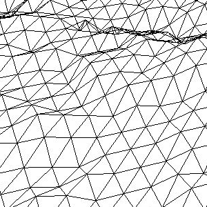
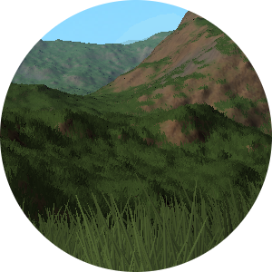
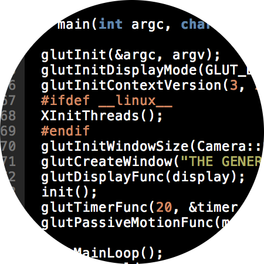
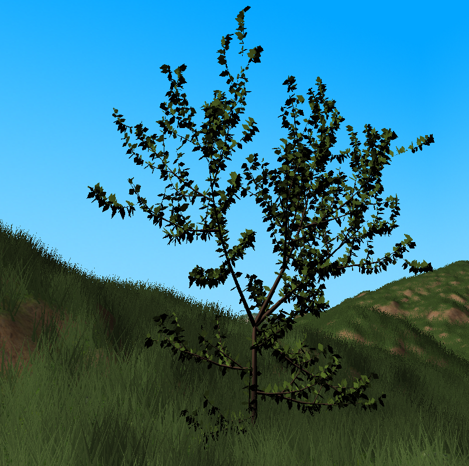

<div class="big-image">
  <div class="container ">

    <div class="youtube">
    <iframe class="youtube-iframe"src="http://www.youtube.com/embed/TlfwWxvNm-Q" frameborder="0" allowfullscreen></iframe>
    </div>
    
    <h2>What is this?</h2>
    <p class="lead bottom-space">
    This is a CDIO project for the course TSBB11 at Linköping University. It is a C/C++ program that procedurally generates and renders an infinite world.
    </p>
    <div class="row home-content">
      <div class="col-lg-4">
        
 
        <h2>Generation</h2>
        <p>
        Heightmaps generated with noise are blended and used to generate geometry for the terrain. This is made in realtime as you move around.
        </p>
        
        <p><a class="btn btn-default" href="#generation" role="button">View details &raquo;</a></p>
      
      </div><!-- /.col-lg-4 -->
      <div class="col-lg-4">
        
        
        <h2>Rendering</h2>
        <p>
          The terrain is rendered with different shaders to make it look natural. Lightning, procedural texturing and more.
        </p>
        
        <p><a class="btn btn-default" href="#rendering" role="button">View details &raquo;</a></p>
      
      </div><!-- /.col-lg-4 -->
      <div class="col-lg-4">
        
        
        <h2>Code</h2>
        <p>
          This project is an open source C/C++ project using OpenGL. The code can be found on Github.
        </p>
        <p><a class="btn btn-default" href="https://github.com/robsi807/TSBB11_Graphics_2014" role="button">To Github &raquo;</a></p>
      
      </div><!-- /.col-lg-4 -->
    </div><!-- /.row -->


    <!-- FEATURE PROJECTS START -->
    <hr class="featurette-divider bottom-space">

    <h2 class="section-header">Feature projects</h2>
    <p class="lead">This section contains project from the course TSBK03 that adds features to the CDIO project.</p>

    <div class="row featurette">
      <div class="col-md-7">
        
        <h2 class="featurette-heading">Vegetation <span class="text-muted">Grass, bushes and trees.</span></h2>
        
        <p class="lead">
          This feature project is made by Robin Silverhav and Peter Thulin. It adds grass, bushes and trees to the world to make it more realistic. The grass is generated dynamically and rendered on top of the terrain with a geometry shader.
          The trees are predefined models that uses a geometry shader that adds leaves to them. 
          To add the grass, bushes and trees to the terrain:
            <ul class="lead">
              <li>Open makefile in <span class="code">TSBB11_Graphics_2014/terrainSimulator/src/</span></li>
              <li>Change the <span class="code">GRASS</span> and <span class="code">PLANTS</span> variables from 0 to 1</li>
            <li>Recompile the program</li>
            <li>Run</li>
            </ul>

        </p>
      
      </div>
      <div class="col-md-5">
        
      </div>
    </div>


    <!---
    <hr class="featurette-divider">

    <div class="row featurette">
      <div class="col-md-5">
        
      </div>
      <div class="col-md-7">
        
        <h2 class="featurette-heading">Birds <span class="text-muted">Animation and boids</span></h2>
        
        <p class="lead">Donec ullamcorper nulla non metus auctor fringilla. Vestibulum id ligula porta felis euismod semper. Praesent commodo cursus magna, vel scelerisque nisl consectetur. Fusce dapibus, tellus ac cursus commodo.</p>
        
        <p><a class="btn btn-default btn-featurette" href="#feature-birds" role="button">View details &raquo;</a></p>
      
      </div>
    </div>


    <hr class="featurette-divider">

    <div class="row featurette">
      <div class="col-md-7">
        
        <h2 class="featurette-heading">Animals <span class="text-muted">Skinning and animation</span></h2>
        
        <p class="lead">Donec ullamcorper nulla non metus auctor fringilla. Vestibulum id ligula porta felis euismod semper. Praesent commodo cursus magna, vel scelerisque nisl consectetur. Fusce dapibus, tellus ac cursus commodo.</p>
      
        <p><a class="btn btn-default btn-featurette" href="#feature-animals" role="button">View details &raquo;</a></p>
      </div>
      <div class="col-md-5">
        
      </div>
    </div>

    <hr class="featurette-divider">

    <div class="row featurette">
      <div class="col-md-5">
        
      </div>
      <div class="col-md-7">
        
        <h2 class="featurette-heading">Water <span class="text-muted">Shading and simulation</span></h2>
        
        <p class="lead">Donec ullamcorper nulla non metus auctor fringilla. Vestibulum id ligula porta felis euismod semper. Praesent commodo cursus magna, vel scelerisque nisl consectetur. Fusce dapibus, tellus ac cursus commodo.</p>
      
        <p><a class="btn btn-default btn-featurette" href="#feature-water" role="button">View details &raquo;</a></p>
      </div>
    </div>
    --->
    <hr class="featurette-divider">
    <p class="lead center">More projects will be added</p>
  </div>
